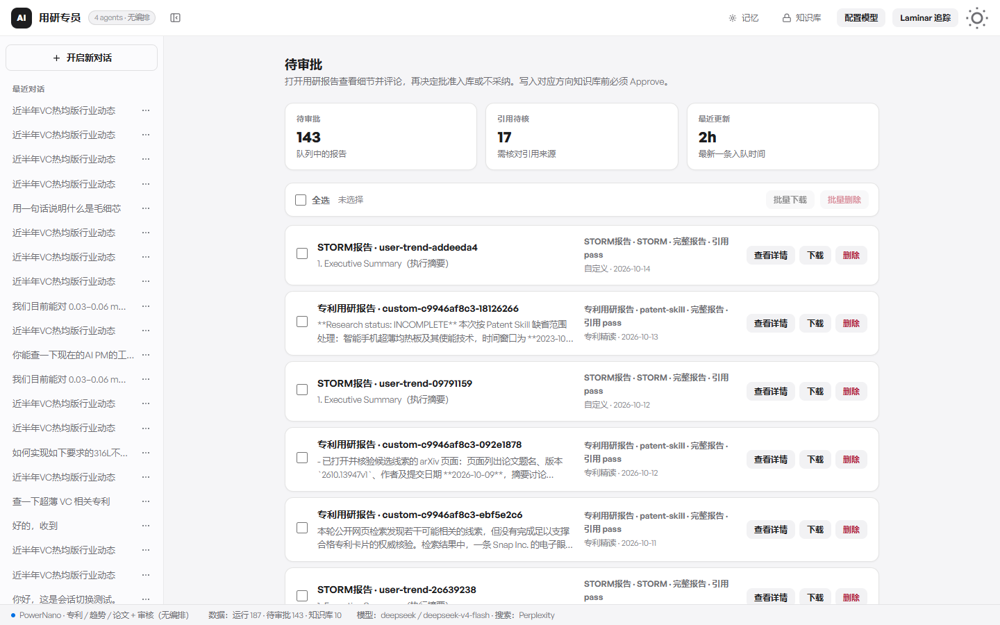
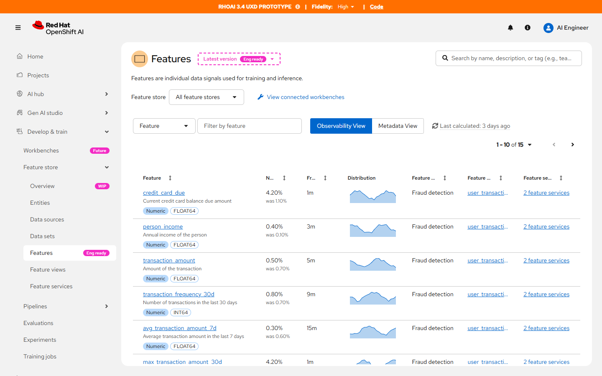

人能看懂判断，
也能拦住自动写入。
三件作品，三条独立的案例。系统可以先检索、先起草、先算出分布。在结果变成团队事实、发出的邮件，或拿去训练的特征之前，人要自己决定放不放行。
Selected work
-
01
用研专员
公开的论文、专利和行业动态，先和已有技术结论对过，再留在库里。
从 0 到 1 · 产品与设计

-
02
Feature Store
先看见特征还能不能用，再顺着血缘追到上游。
企业机器学习平台 · 目录与血缘

-
03
Aurora Inbox
一封邮件一次判断，发出之前必须有人点。
代理收件 · 可验收的边界

点进每一行，阅读该作品的用户、流程和界面。截图来自本地正在运行的原型。